Everything worth driving to on Naxos sits between sea level and 1,003 m, and altitude is the only axis that orders it honestly. Two closed driving loops and one dawn climb cover the whole sheet. Here it is surveyed — every place at its true height, every monument pinned with its hours and its price, and the two calendar traps drawn rather than footnoted.
1,003Metres · highest in Cyclades
2Days the interior needs
10Waymarked trails
200+Byzantine churches
59Sources on this sheet
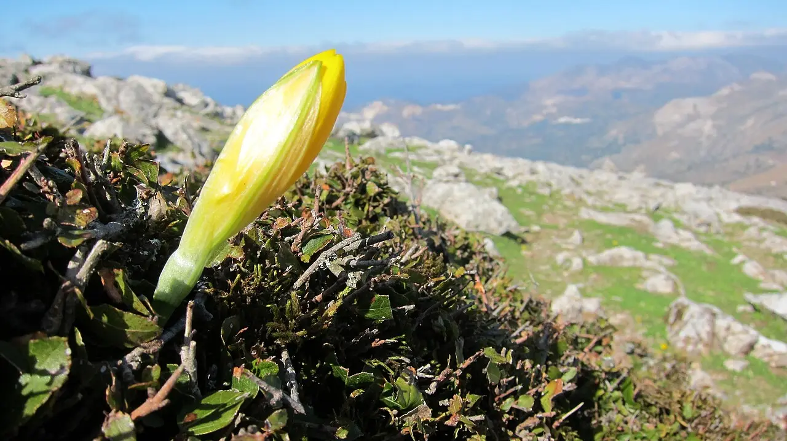
Base map · the Zas massif, the moisture trap that made an interior possible on a Cycladic island [5]
§ 01
Survey notes
The decision, before the detail
Loop A
Tragaea · ~65 km · half a day of driving
Chora → Sangri/Temple of Demeter → Halki → Moni → Filoti. Highest payoff per kilometre on the island: a re-erected Archaic Ionic temple in marble, 08:30–15:30 daily except Tuesday, €5 [2], plus a 6th-century church with pre-iconoclastic frescoes [54] inside an olive plain holding 200+ Byzantine churches [6]. All asphalt, 25–35 min per leg from Chora [1].
Dawn
Zas from Agia Marina · ~6 km return · 3–4 h
~450 m of gain to a 1,003 m summit, the highest point in the Cyclades [3][4]. Not the 12.8 km / 5 h 20 Filoti circuit [30] unless you have a spare morning and cool weather. Pair it with Apeiranthos afterwards.
Loop B
Emery north · ~110 km · a full day
Apeiranthos → Koronos → Apollonas → back down the west coast. Only if you have a fourth day. It buys the ropeway remains [8], stepped Koronos [13] and the 10.7 m kouros [48].
Cut
The Apollonas kouros as an errand, and Cheimarros Tower
2.5 h round trip for a 10-minute stop [49]; and a 14 km dead-end drive plus a walk for a tower you can only look at from outside [52].
§ 02
The altitude profile
Every named place, at its true height
Naxos has an interior because Mt Zas traps moisture the other Cyclades never see [5][4]. Plot the villages by altitude and the sheet reads as one continuous climb: emery ports at the waterline, the olive plain at 280 m, the quarries at 400 m, the emery villages between 500 and 600 m, and the marble village just under 700 m.
Horizontal axis is rank, not distance. Altitudes: Halki 280 m [10] · Kinidaros 400 m [7] · Photodotis 500 m [55] · Koronos 540 m [13] · Skado 580 m [14] · Zas Cave 630 m [4] · Apeiranthos 650–700 m [12] · summit 1,003 m [4].
Datum note. The summit trig point reads 1,001 m on the ground [32], the municipality publishes 1,003 m [4] and some operators 1,004 m [42]. That is survey-datum noise, not a second peak.
§ 03
The sheet, band by band
Descending from the summit
1,003 m
Summit band
Mt Zas · highest point in the Cyclades
The dawn climb, and nothing else that day before it
Measured on the ground, Filoti → summit is 4.34 km with about 3 h 25 of walking, of which village-to-chapel is 40 min and chapel-to-summit 1 h 09 [32]. From the Agia Marina chapel it is ~6 km return with ~450 m of gain in 3–4 h [3] — reviewers report about an hour up [33]. The top is a plain trig point; the confusion is below it, where cairns are the only marker and an unmarked gap in a wall misleads people [33].
~6 km return~450 m gainNo water on routeNo shadeRed paint + cairns
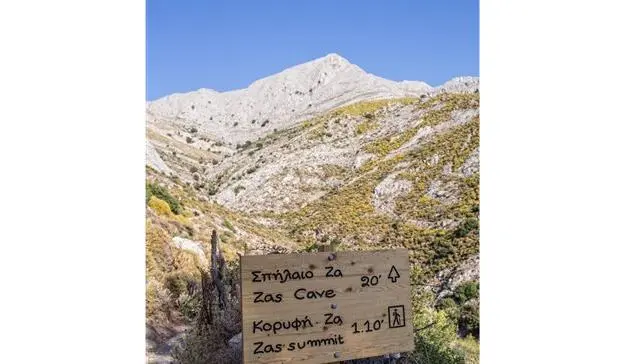
Mt Zas · naxos.gr
650–700 m
67% of summit
Apeiranthos · the marble village · pop. 773
Four museums in a village of under 800 people
28 km north-east of Chora, Cretan-descended in dialect and tradition, first documented by Buondelmonti in 1420 [12]. Two of the four museums carry the story: the Archaeological Collection (Early Bronze Age marble figurines and the incised Aroni plaques, 08:30–15:30, closed Tuesday, €5) [27] and the Geological Museum, which explains the marble and emery you have been driving past, free, May–September 11:00–16:00 [28]. The folk-art and natural-history collections are the two to drop if you are time-boxed.
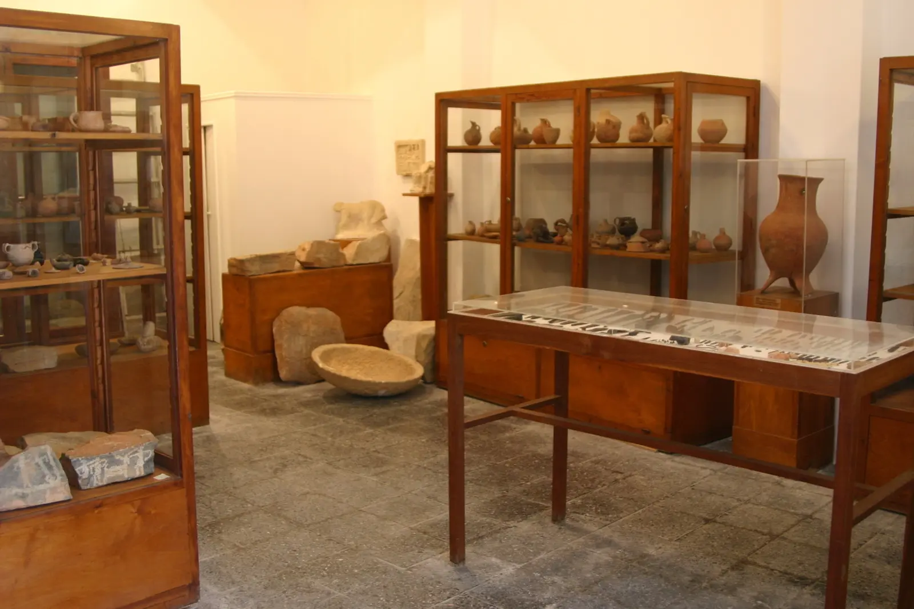
Arch. Collection
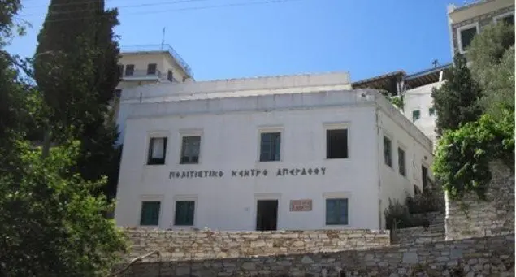
Geological Museum
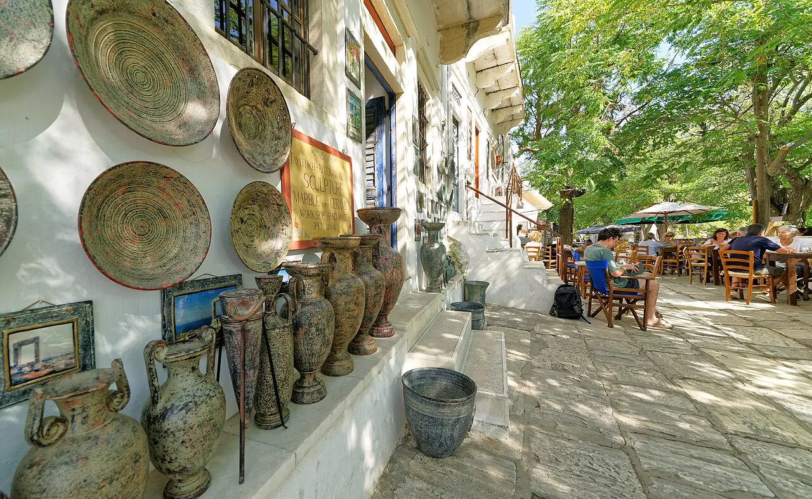
Apeiranthos · marble lanes
630 m
63% of summit
Zas Cave · Filoti flank
A real excavation, not a myth stop
Chambers up to 11 m with stalactite formations [4]. Explored in 1962, systematically excavated 1985–86 and 1994, occupied from the Late Neolithic to Early Cycladic III, with the finds now in the Naxos Archaeological Museum [34]. The absence of crop-processing debris points to seasonal herding rather than settlement, and a nearby rock cutting reads Zeus Melosios — Zeus as protector of sheep [34]. Inside it runs roughly 15 °C cooler than outside; bring a torch [3].
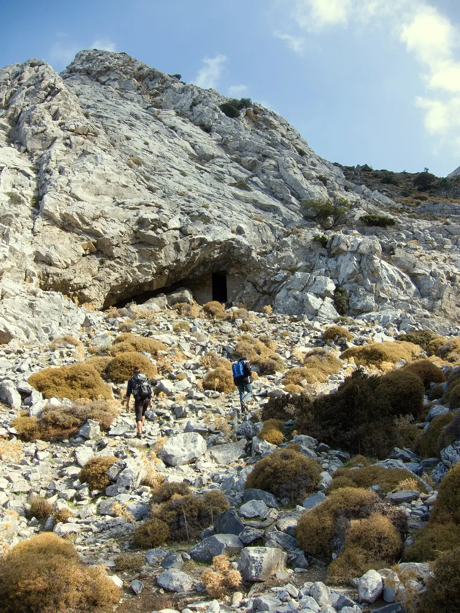
Approach from Aria
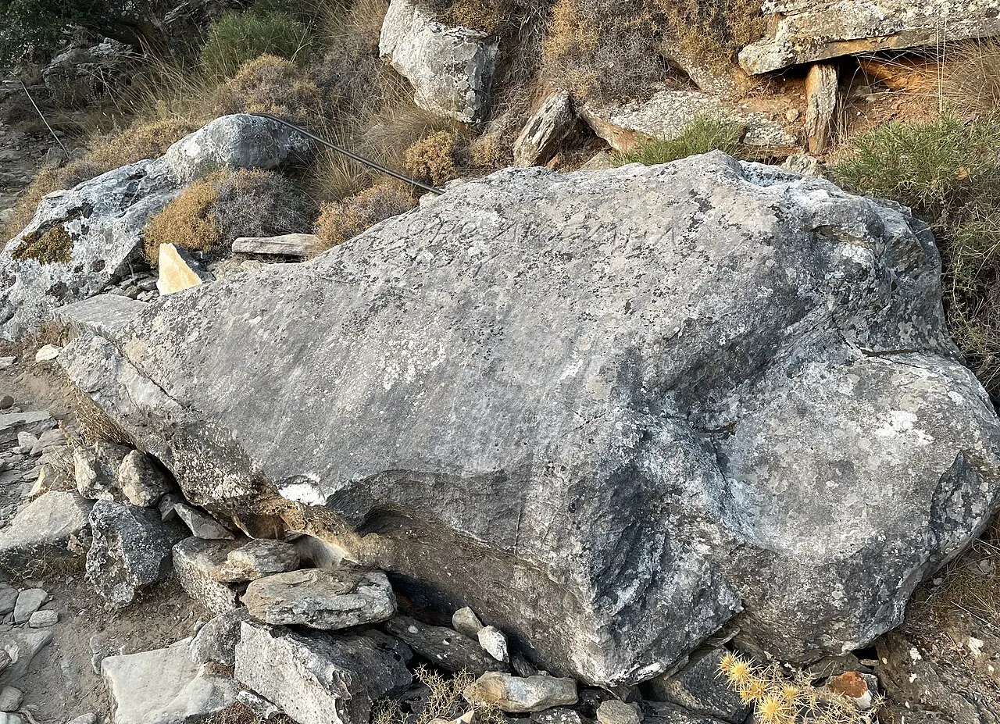
Horos of Zeus Melosios
Zas flank · above the cave
580 m
58% of summit
Skado · 38 km from Chora · ~120 people
A 15-minute stop, not a destination
Amphitheatric on the slopes of Mt Koronos, 2.5 km north of Koronos [14]. Its inhabitants still hold shares in the emery mines they worked [15] — which is the whole reason to slow down here rather than park.
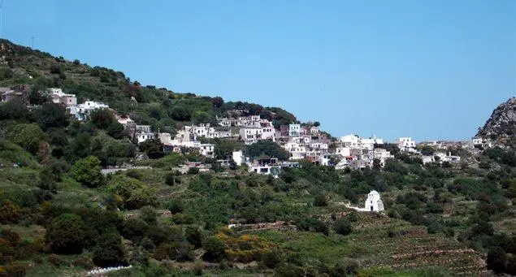
Skado · naxos.gr
540 m
54% of summit
Koronos · 28 km from Chora
The most atmospheric village on the island, and the least visited of the big four
Seven neighbourhoods stitched together by whitewashed steps and covered archways around the central Platsa square, with an eco-museum, a folklore museum and three car parks [13]. Emery made it and emery unmade it: ~3,000 residents before WWII, then the mines closed under occupation and 414 villagers died of hunger [13].
Three car parksEco-museumTrails 9 & 10 start here
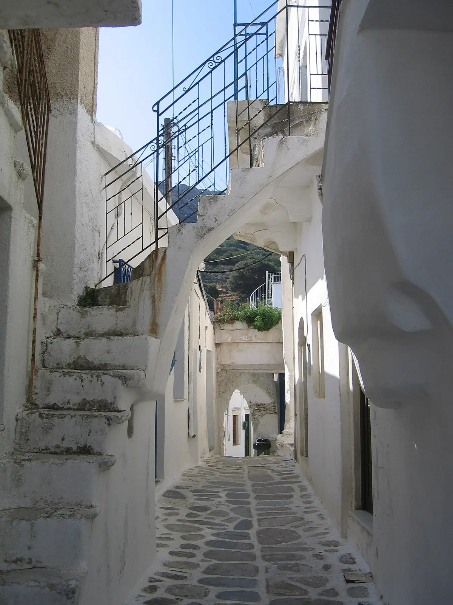
Koronos · stepped alleys
500 m
50% of summit
Monastery of Christ Photodotis · north of Danakos
Fortified, restored in 2007, and open only in summer
1 June – 30 September; 11:00–14:00 in June and September, 11:00–15:00 in July and August, free [55]. Reached by car via the Agia Marina church road and then a dirt road — which matters, because rental contracts routinely exclude damage on unpaved surfaces [9]. Trail 3 walks in from Danakos instead [29].
FreeFinishes on dirtNot wheelchair accessible
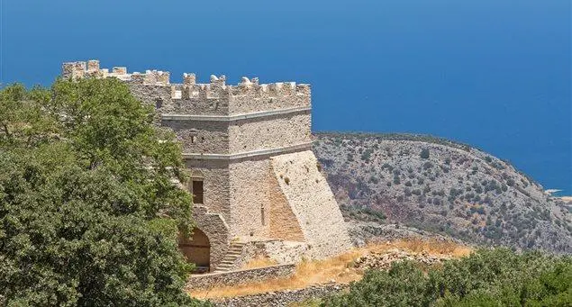
Photodotis · naxos.gr
400 m
40% of summit
Kinidaros · the working quarries
Marble is still being cut, 2,500 years on
Naxian marble was quarried before 550 BC and exported to Olympia and the Athenian Acropolis [5]. Six quarries operate near Kinidaros, 15 km from Chora at 400 m; the largest, Bolimbas, is visible straight from the road, and the ancient Flerio workings sit 7 km away [7]. This is the cheapest 20 minutes on the sheet — it is a roadside stop, not a site.
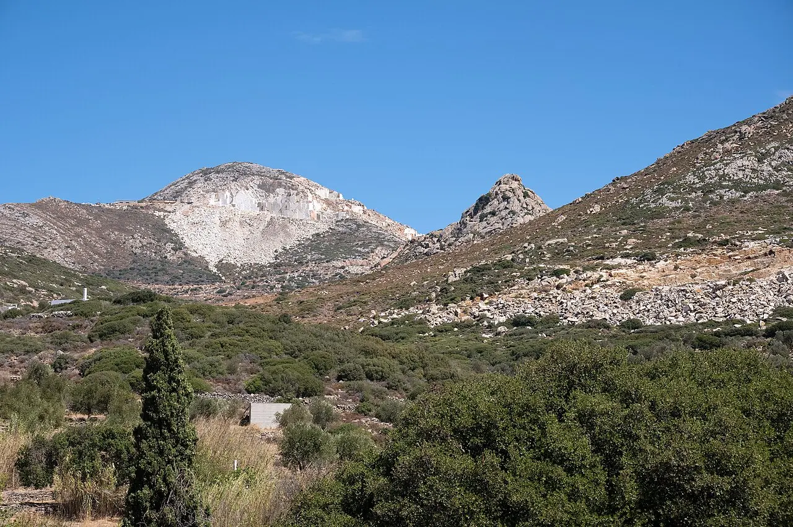
Kinidaros · working faces
280 m
28% of summit
Halki (Chalkio) · former capital · anchor of Loop A
Three things inside five minutes' walk
16 km / 30 min from Chora, with free parking throughout and the Venetian tower lot the easiest [10].
Vallindras distillery — workshop from 1862, citron liqueur from 1896, first exported 1928, fifth generation still running it; kitron is one of only three Greek spirits with PDO status [22][23]. Three grades: green 30%, white 33%, yellow 36% ABV, the white being the local pour [24]. Budget ten minutes — reviewers consistently describe a small room with minimal signage [25].
Fish & Olive — Katharina Bolesch and Alexander Reichardt's ceramics and jewellery gallery on the square; the 2026 exhibition Cycladic Whispers runs 10 May to mid-October, marking their 25th year on Naxos [26]. Apr–Oct 10:00–14:00 and 18:00–21:00 [10].
Panagia Protothroni — 7th century or earlier, Apr–Oct 08:00–20:00, free; Agios Georgios Diasoritis 500 m away is 11th century but opens only 1 July – 31 August, 11:00–13:30 [10][35].
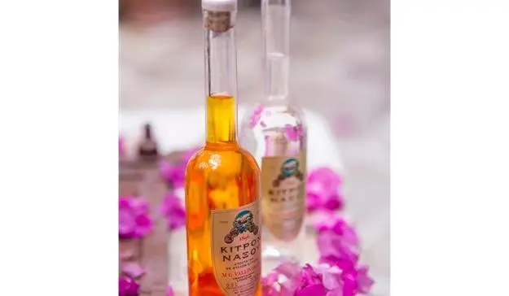
Vallindras
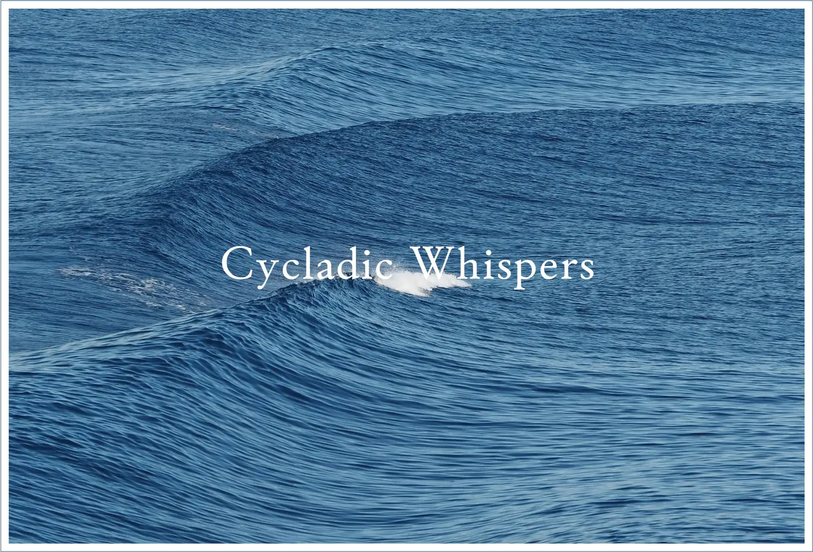
Fish & Olive
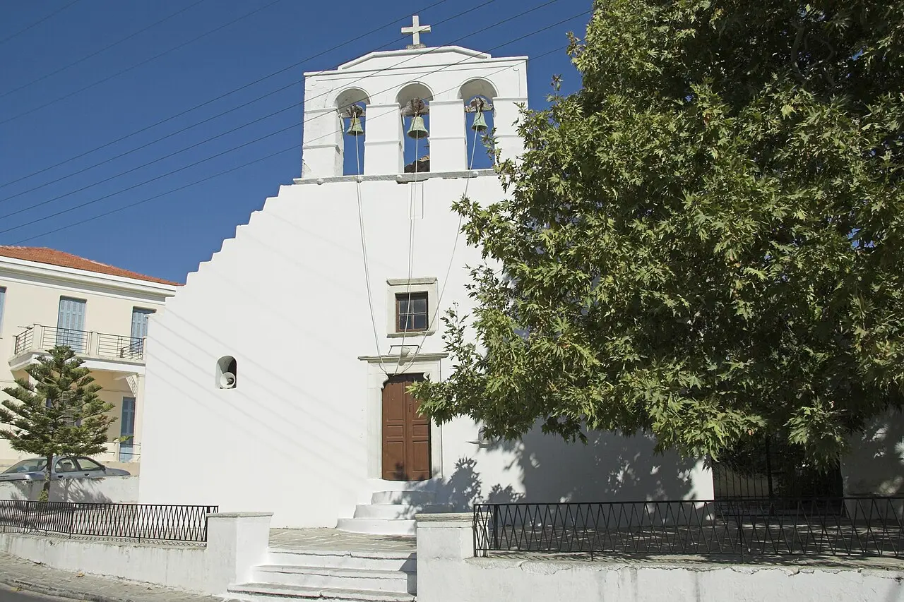
Protothroni
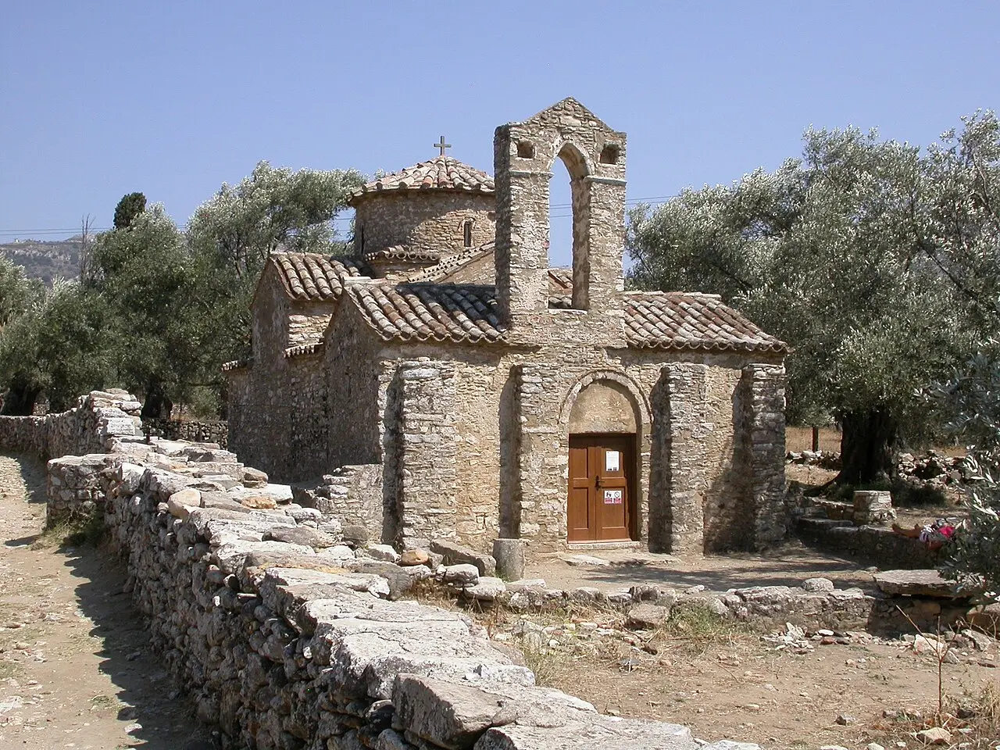
Diasoritis
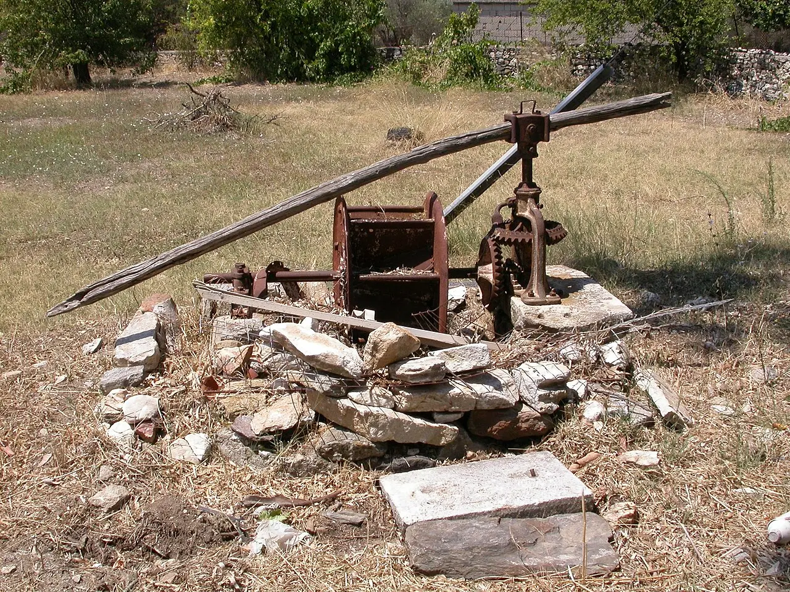
Halki · Maganopigado
0 m
Waterline
Moutsouna & Apollonas · the two industrial ports
Where the mountain sent its cargo
Moutsouna was the emery terminus. The aerial ropeway was built 1926–29, ran 8,720 m from Stavrolagada on 72 pylons and moved ~340,000 tonnes between 1929 and 1982; the pylons, wagons and loading stations still stand as a free open-air industrial monument, signposted off the Koronos–Lionas road [8]. Fish tavernas on the waterfront [16]. ⚠ Getting there means 650 m of descent from Apeiranthos on a road described as one of the steepest in Greece [9].
Apollonas was the ancient marble export port, 36 km from Chora, with a sandy beach, tavernas, parking and the 10.7 m kouros just outside the village entrance [17][49].
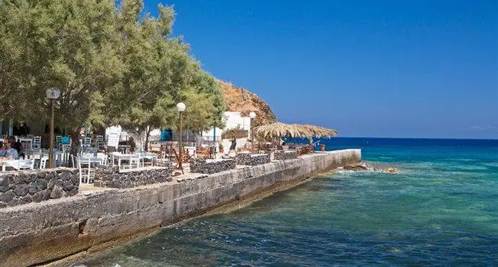
Moutsouna
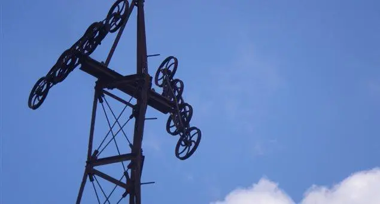
Emery ropeway
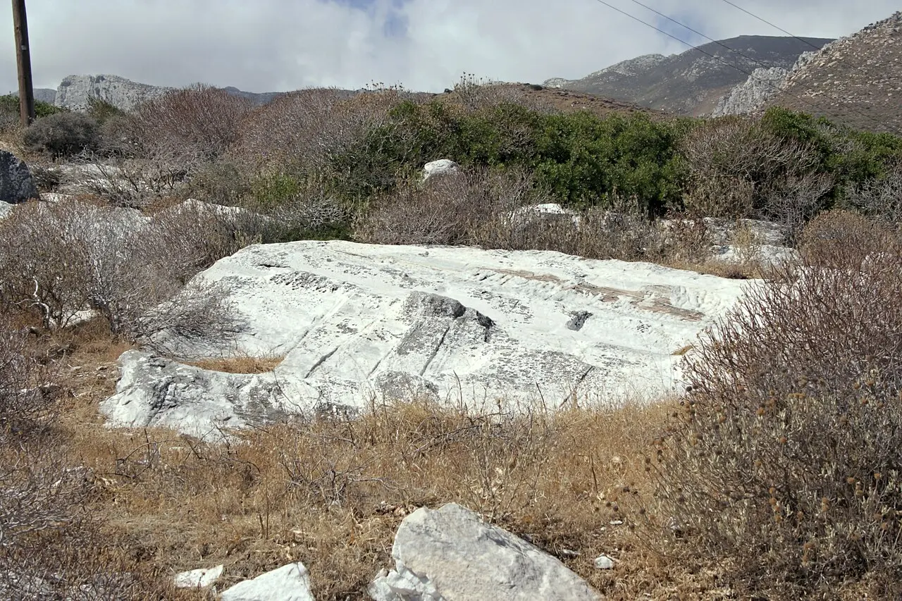
Apollonas quarry
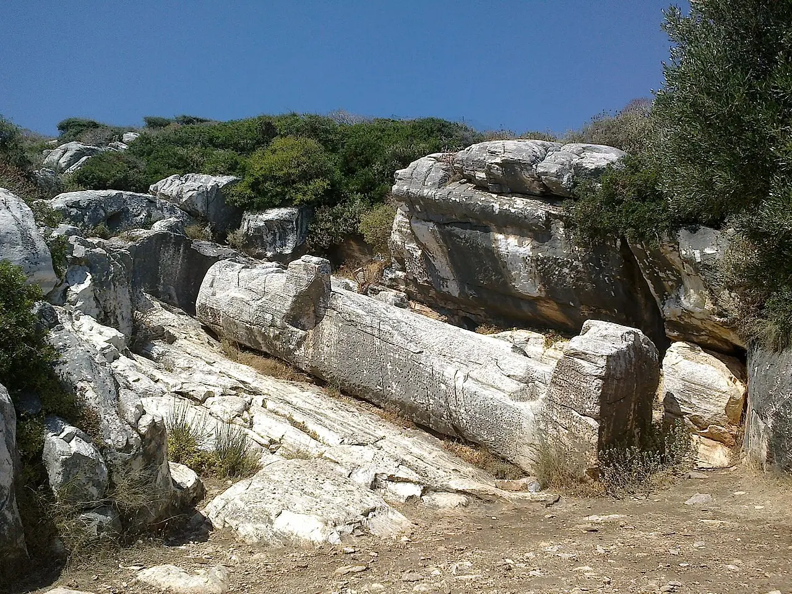
Apollonas kouros · 10.7 m
§ 04
The loops, traced
Closed circuits · asphalt unless flagged
Two loops are the two-day core. Everything else on the sheet is a spur off one of them, and the spurs are where trips get eaten.
Loop A
Tragaea — the highest payoff per kilometre on the island
~65 km1.5–2 h net drivingAll asphalt
Buys you: the Temple of Demeter [2], Bazeos Tower[19], the kitron distillery [10] and five Byzantine churches on Trail 4 [35]. Legs are 25–30 min Chora–Halki and 30–35 min Chora–Filoti [1].
Loop B
Zas at dawn, then Apeiranthos
~75 km2 h net drivingLast 2 km single-track
The chapel lot is small and fills [33], which is a second argument for the early start alongside the heat [58]. Apeiranthos is 45–50 min from Chora [1].
Loop C
The emery north — a fourth day, or nothing
~110 km4–5 h net drivingAsphalt throughout
The ropeway installations at Stavrolagada, Pezoulia and Pigi are signposted from the Koronos–Lionas road and cost nothing [8]. Apollonas is 1 h 15 from Chora on the fast route [1][49].
Spur D · Moutsouna
~22 km return · 1 h + lunch
Asphalt but "one of the steepest in Greece": 650 m down to sea level in tight hairpins [9][16]. Fish tavernas and the ropeway's sea terminus at the bottom.
Spur E · Melanes / Flerio
~35 km · 1 h
Slots into a spare 90 minutes on your way in or out of Chora — it does not need its own day. Two colossal kouroi, a quarry sanctuary and the modern quarries [44][47].
Spur F · Cheimarros
28 km return · 1.5 h + walk
Dead-end provincial road, 14 km south of Filoti, for a 4th-century BC marble tower still ~15 m tall [52][53]. Great if you want an empty half-day; poor use of a three-day trip.
Road
Road reality, 2026
Village-to-village asphalt is well maintained, but many secondary roads are dirt or rock [9]. The last stretch to the Aria Spring trailhead is narrow, without guardrails and with almost nowhere to turn around [31]. Rental contracts routinely exclude damage on unpaved surfaces — which is exactly the Cheimarros and Photodotis approaches [9][55]. Do not drive the mountains after dark: no street lighting, livestock on the road, and signs sometimes only in Greek [9]. Parking is free and plentiful in the villages [10][13].
§ 05
Two clashes worth drawing
Calendar, then clock
These are the only two constraints on this sheet that will actually break a day. Both are shapes, not sentences.
Loop A wants both Gyroulas and Bazeos in the same day — and there is no day of the week on which one of them is not shut. On a Monday you get the temple and lose the tower; Tuesday loses the temple, Yria and the Apeiranthos collection at once. The Geological Museum publishes no weekly closure day [28]; Drosiani in practice depends on the caretaker being there [6].
Clash 2 · the state collections shut at 15:30 [2], August runs ~30 °C with 35–36 °C spells [58], and the Ministry of Culture's 2026 heat measure shut Knossos 13:00–17:00 at 43 °C [57] and the Acropolis noon–17:00 [59]. Since Gyroulas and Yria close at 15:30 anyway, arriving before 11:00 means you never meet the problem. Start the Zas climb by 07:15–07:30 — reviewers report heat already building by 08:30 [33].
Do you need a guide? No — trails are red-blazed, cairned and intuitive in daylight [3]. If you want one: group hikes list from ~$95 pp [43], and a private Zas hike with transfers, snacks and insurance starts at €468 for up to two people, 3 h, medium grade, children 7+ [42]. Carry 2 L per person; the best windows are late April–early June and mid-September–October [30][3].
§ 07
Trail-marker legend
The municipality's numbered network, 1–10
1
Apeiranthos → Ag. Ioannis Theologos → emery mines → Azalas
The miners' mule track to the Kakoryakas mines: a 13th-century church, the Kamilaris bridge and ropeway ruins [37].
12.8 km · 5 h 20 · hard — the full circuit. Most people should do the half [30][29].
3
Danakos → Photodotis monastery → Apeiranthos
Pairs with the monastery's 11:00–15:00 summer opening [29][55].
4
★ Halki → Diasoritis → Rachidiotissa → Drosiani → Moni loop
7.2 km · 2 h 10 · moderate — best value walk on the island: five churches spanning the 6th to 14th centuries plus the 17th-century Barozzi-Gratsia tower [35].
5
Halki → Tsikalario → Apano Kastro → Ano Potamia
Geometric circular tombs of the 9th–8th centuries BC and a Frankish castle rock inhabited from early historical times through Frankish rule [36].
Unnumbered variant · Apeiranthos → Fanari → Kaloxylos → Halki
~3 h · +600 m / −880 m
Frequently walked; views to Ikaria from the Fanariotissa chapel [40].
Routsouna waterfall · from Keramoti
~6 km return · ~3 h · 3 of 5
A shaded morning walk with a cool pool at the end — a 6 m fall, not a Cycladic Iguazú. Sturdy shoes, long trousers and at least 1 L of water required [41].
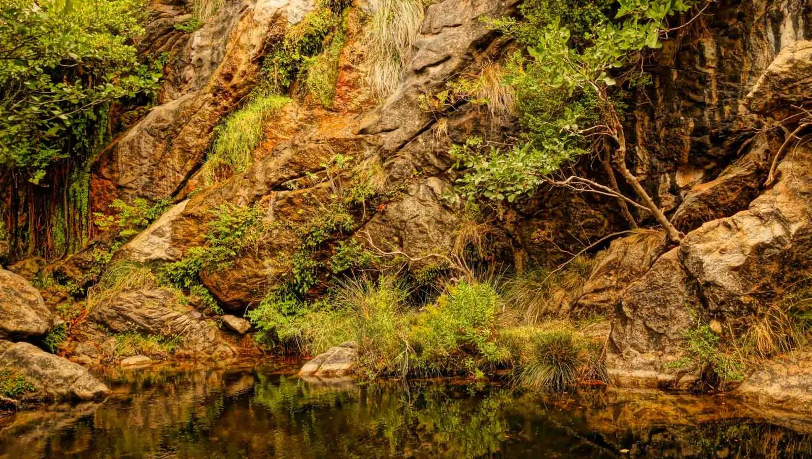
Apano Kastro · on Trail 5
Medieval layer, free, unstaffed
A fortified rock with half-ruined Byzantine and post-Byzantine churches, reached past the Geometric-period circular tombs at Tsikalario [36].
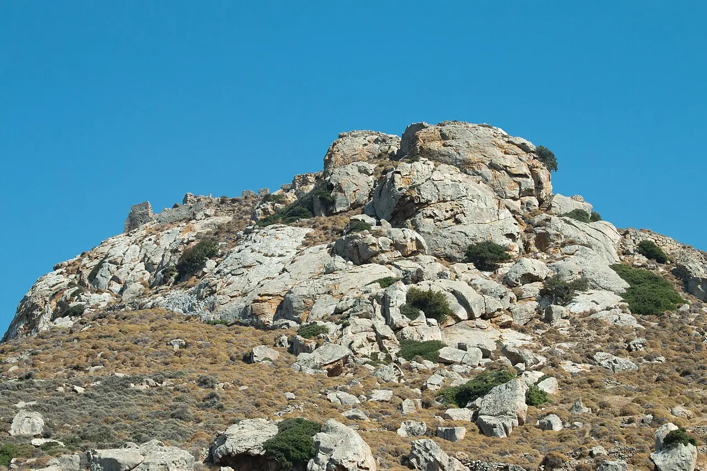
§ 08
Monuments, pinned
Altitude on the pin · hours and price stamped
Sangri · Loop A
Temple of Demeter, Gyroulas
The interior's must-see
08:30–15:30Closed Tue€5 incl. museum
Built c. 530 BC in Naxian marble, an almost square 13.29 × 12.73 m, one of the earliest Ionic temples anywhere [50]. Dismantled for a 6th-century basilica, partially re-erected in 1994 from roughly 1,600 surviving fragments, site museum opened August 2001 [50]. Card payment not reliably available [2].
Bought by the Bazeos family in the 1890s, restored and reopened in 2001, run by the non-profit AION [18][19]. Steep unrailed stairs to the upper floors [21]. ⚠ The official domains are bazeostower.com and naxosfestival.gr — the tower's .gr variant has lapsed to an unrelated online-casino page [20].
The synAFI/AFI collective exhibition runs 31 May – 11 October 2026, with evening concerts through August and a Maria Callas programme on 16 September [20]. In Halki itself, Fish & Olive's 2026 exhibition Cycladic Whispers runs 10 May to mid-October [26].
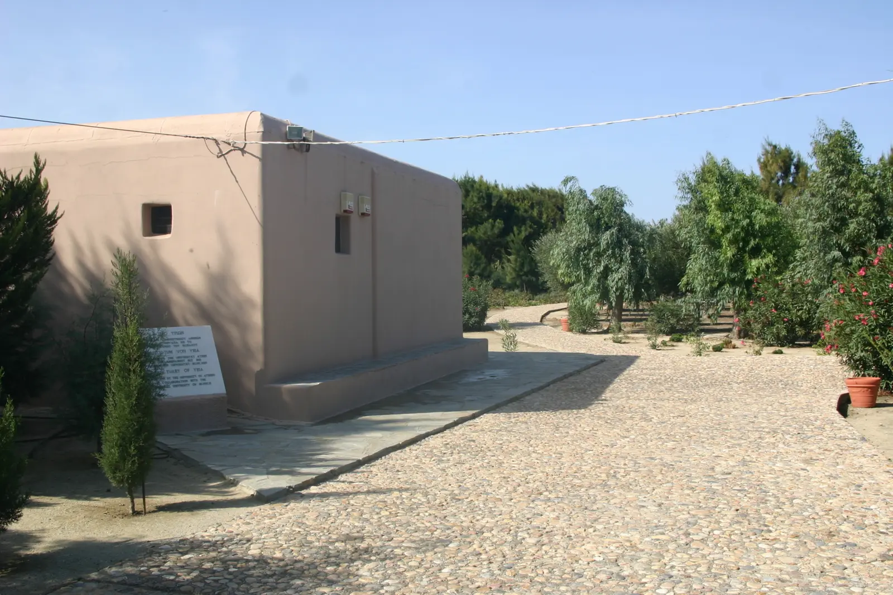
3 km S of Chora
Temple of Dionysos, Yria (Iria)
Not interior — but the same itinerary
08:30–15:30Closed Tue€5 incl. site
A sanctuary in continuous use from the 14th century BC to the Roman period, in the Livadi plain near the airport [51]. Slot it on the drive in from the airport, not as a separate trip.
650–700 m
Archaeological Collection, Apeiranthos
Loop B · after the climb
08:30–15:30Closed Tue€5
Early Bronze Age marble figurines and the incised plaques from the Aroni peak, same hours year-round [27].
650–700 m
Geological Museum, Apeiranthos
Explains everything you drove past
May–Sep 11:00–16:00Free
Marble, emery and the Stelida palaeolithic finds [28]. No weekly closure day is published — treat the day-of as unverified.
Signposted footpaths; not wheelchair accessible [44]. Don't stop at the statues — the real interest is the industrial landscape: wedge-hole rows and extraction grooves still in the rock face, half-finished blocks, and an abandoned 7.5 m architrave beam weighing 25 tonnes [46].
Excavated by the University of Athens from 1997: cult activity from the 8th century BC through three building phases, ending in a small marble temple 3.40 × 4.40 m in the mid-6th century — and the votives were the quarrymen's own failed marble work [47].
Apollonas · sea level
Kouros of Apollonas
10.7 m · ~80 tonnes
Open 24 hFreeNot a day trip
Roadside parking and a short path [49]. Long called Apollo after the village; Wilhelm von Massow reidentified it as Dionysos in 1932 on the basis of its beard, which is not a kouros trait [48].
Koronos–Lionas road
Emery ropeway installations
Free open-air industrial monument
Year-roundFreeSignposted
Built 1926–29, 8,720 m from Stavrolagada to Moutsouna on 72 pylons, ~340,000 tonnes moved between 1929 and 1982. Pylons, wagons and loading stations still stand at Stavrolagada, Pezoulia and Pigi [8].
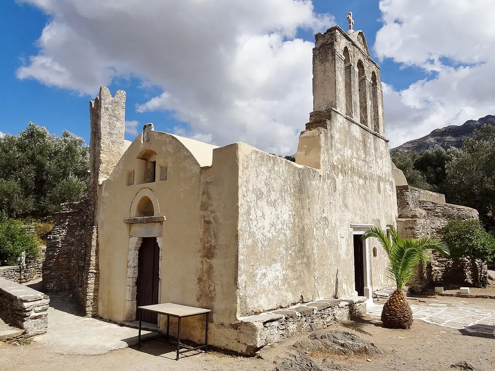
Moni · Loop A
Panagia Drosiani
Oldest Byzantine church in the Cyclades
1 Jul – 31 Aug11:00–13:30Free · donation
Built in phases between the 4th and 6th centuries, with 5th-century frescoes of the equestrian saints George and Dimitrios and a dome Pantokrator shown in two ages [54]. ⚠ In practice it depends on the caretaker being there — most Naxian churches need "the assistance of a nearby village caretaker who is keeper of the keys" [6].
Halki · 280 m
Panagia Protothroni
The one that is reliably open
Apr–Oct 08:00–20:00Free · donation
7th century or earlier [10]. Plan around this one and Drosiani's 11:00–13:30 slot; treat the other 200-odd as bonuses [6].
500 m from Halki
Agios Georgios Diasoritis
11th century · on Trail 4
1 Jul – 31 Aug only11:00–13:30Free · donation
Outside that window, by appointment via the Diocese [10][35].
500 m · Danakos
Monastery of Christ Photodotis
Fortified · restored 2007
1 Jun – 30 SepJul–Aug 11:00–15:00Free
June and September 11:00–14:00. Car via the Agia Marina road, then dirt; parking on site; not wheelchair accessible [55].
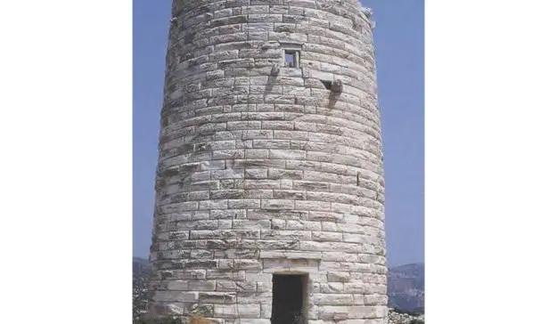
14 km S of Filoti
Cheimarros Tower
Late 4th century BC · unstaffed
UnfencedFreeSkip on 3 days
Originally ~20 m tall on a 9.2 m base with four internal storeys linked by marble stairs, inside a 35 m square enclosure [52]. Still ~15 m: 9.20 m external / 7.12 m internal diameter, 1.10 m walls of mortarless local marble; externally well preserved, internally collapsed with no roof [53]. Purpose still debated — outpost, stock shelter or signal station [52].
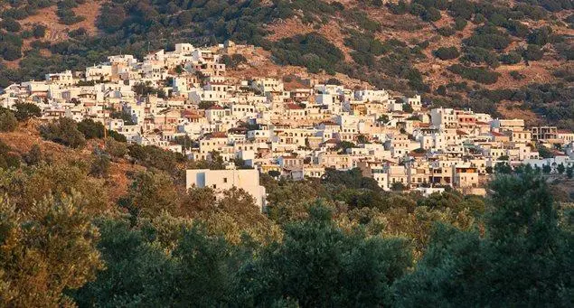
Zas basecamp
Filoti
Largest village · ~1,800 residents
18 km from ChoraBarozzi Tower · 1718
Two hillsides under Zas, with the Frankish Barozzi Tower dated 1718 on the building [11][32]. ⚠ Around 15 August the three-day Panagia Filotitissa panigyri is the biggest traditional festival in the interior — violin, dancing, and a village that will not be quiet [11].
§ 09
The kouroi, to scale
Three colossal statues abandoned where they broke
Three unfinished Archaic figures, abandoned in or beside the quarries that produced them. They are the single most distinctive thing in the Naxian interior, and they are free. Solid bars are the lower published figure; the hatched extension is the higher one, where sources disagree.
Flerio · the garden kouros
First half 6th c. BC · right leg snapped in transport
Length
4.7 m — 5.5 m
Weight
5–7 t
4.7 m long per Wikipedia, 5.5 m per the local Melanes site [45][46]. Lies in a shaded orchard at the end of a short signposted walk [44].
Flerio · the quarry (Faragi) kouros
First half 6th c. BC · accident during quarrying or moving
Length
3.83 m surviving — est. 5.50 m
Weight
5–7 t
5.0 m per Wikipedia; 3.83 m surviving of an estimated 5.50 m per the local site [45][46]. Halfway up a 300 m marble outcrop; its feet rest on a modern concrete pad [45].
Apollonas · the giant
Turn of the 7th/6th c. BC · no haul route was ever cut
Length
10.7 m
Weight
≈80 t
A monolith of light grey Naxian marble that was simply too heavy to transport [48]. Twice the length and roughly twelve times the mass of either Flerio figure — which is the whole reason it is still lying there.
No 2026 hours are published on the municipality's own page[22]. Phone +30 2285022239 the morning of [23]. Since the visit itself is 5–10 minutes, this changes when you go, not whether.
Unresolved · admission
Bazeos Tower entry price
Reading A · official siteHours published; no admission price stated[19]
Sheet 03 · The Naxos interior — mountain villages, marble country and Mt Zas · Edition 2026
Expedition depth · 59 sources · 21 min read on the default view
Contour interval 100 m · altitudes as published by the cited sources, not surveyed here · the summit datum is disputed between 1,001 m, 1,003 m and 1,004 m
Prices and hours verified against 2026 publications; the two figures this sheet could not settle are drawn as unresolved in § 10 rather than averaged away.
 Sangri · Loop A
Sangri · Loop A